Segment Lab — User Guide
URL: https://segment-lab.qwarry.co/ · Internal platform · Last updated: May 2026
1. Introduction
Segment Lab is Qwarry's internal segment management platform. It is the central tool used by AdOps and Sales teams to create, configure, and activate audience segments across Qwarry's partner ecosystem (Xandr, Index Exchange, Google).
Segment Lab allows you to:
- Create and manage all types of targeting segments (contextual, YouTube, socio-demo, technical, language, combinations)
- Activate segments on DSP/SSP partners via partner mappings
- Monitor reach — view impressions and user counts per segment
- Tune YouTube targeting — use AI-powered vector search to find relevant channels and videos
- Track commercial usage — link segments to Zoho CRM deals
• AdOps — Create/edit segments, tune YouTube targeting, manage partner mappings
• Sales — View available segments, check reach data, link segments to deals
• Customers — Request custom segments via their account manager
2. How It Works
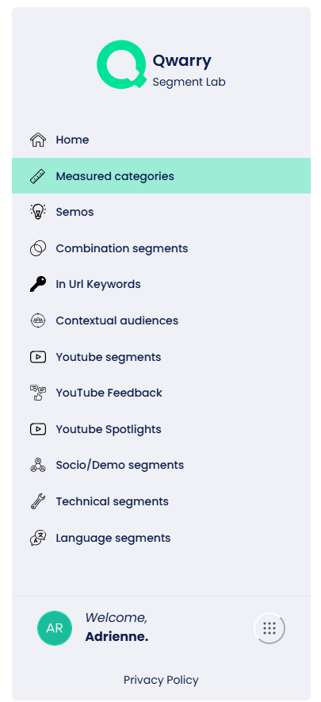
The application uses a left sidebar navigation with the Qwarry logo at the top. The menu items provide access to all platform sections:
- Home — Dashboard overview
- Measured categories — Manage the 526 semantic categories (building blocks of segments)
- Semos — Create and manage semantic model segments
- Combination segments — Build multi-condition targeting rules
- In Url Keywords — URL-based keyword targeting
- Contextual audiences — User-level audience segments
- Youtube segments — AI-powered YouTube channel/video targeting
- YouTube Feedback — Review and process feedback on matched channels/videos
- Youtube Spotlights — Simplified curated channel lists
- Socio/Demo segments — Age and gender targeting
- Technical segments — Device, OS, browser targeting
- Language segments — Language-based targeting
The currently active section is highlighted with a green background. At the bottom, the sidebar shows the logged-in user's name and a Privacy Policy link.
Segment Lab is the management layer that sits between Qwarry's scoring technology and the DSP/SSP partners where segments are activated.
(create & configure) → Partner DSPs
(Xandr, IX, Google)
The Segment Lifecycle
- Creation — A segment is created in Segment Lab with its parameters (name, description, rules)
- Configuration — Thresholds, keywords, or conditions are set depending on segment type
- Mapping — The segment is mapped to one or more partners (Xandr, Index Exchange)
- Activation — The segment becomes available for targeting on the partner platform
- Monitoring — Reach data (impressions, users) is collected and displayed
Underlying Technology
| Component | Role |
|---|---|
| Semantic Scoring | Qwarry's 400+ models analyze web page content and assign category scores |
| Measured Categories | The scored categories (e.g. "Automotive", "Food & Drink") — the building blocks of segments |
| Vector Search (YouTube) | AI embeddings + OpenSearch to find semantically relevant YouTube channels/videos |
| Partner APIs | Xandr API, Index Exchange API — to register and sync segments |
3. Segment Types Overview
Segment Lab manages 8 distinct types of segments, each serving a different targeting purpose:
| Type | What It Targets | How It Works |
|---|---|---|
| SEMOs | Pages about a specific topic | Semantic score threshold on a measured category |
| Contextual Audiences | Users who visited categorized pages | IDs of users who visited scored URLs (frequency + recency) |
| Combinations | Pages matching multiple conditions | AND/OR logic combining multiple SEMOs |
| YouTube Segments | YouTube channels & videos | AI vector search matching channels to a theme |
| YouTube Spotlights | Curated YouTube channel lists | Simplified vector search for specific channel targeting |
| In-URL Keywords | Pages with specific words in the URL | Keyword matching on the page URL string |
| Socio-Demo | Users by age/gender | Demographic data from panel partners |
| Technical | Device, OS, browser | Technical environment detection |
| Language | Pages in a specific language | Language detection linked to a measured category |
4. Measured Categories
Measured Categories are the building blocks of all segments. They are the 526 semantic categories scored by Qwarry's technology. Each category represents a topic (e.g. "Automotive", "Food & Drink", "Personal Finance") and has:
- Name — e.g. "Food & Drink", "Automotive", "Personal Finance"
- Metadata per language — Description, keywords, and exclusion list for each supported language
- Quality metrics — Accuracy, precision, and recall scores
Measured Categories in the Interface
List View
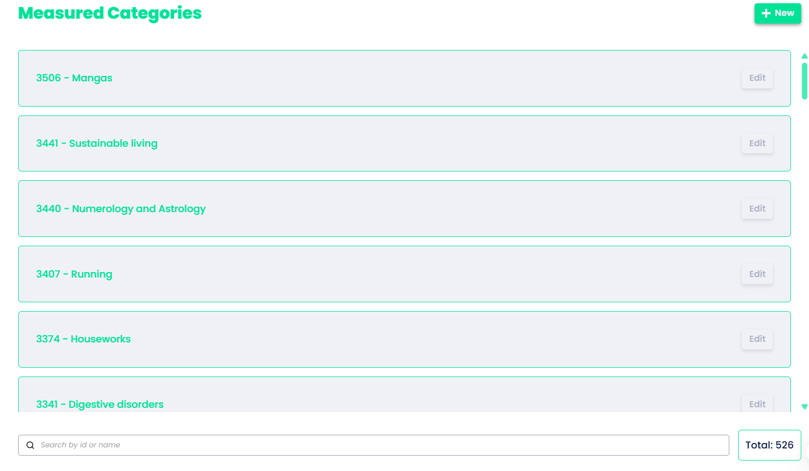
The list view displays all 526 measured categories sorted by ID (most recent first). Each card shows the category ID and name (e.g. "3506 – Mangas"). A search bar at the bottom allows filtering by ID or name, and the "+ New" button in the top-right lets you create a new category. Click on a category name to view its details, or click "Edit" to modify it.
Detail View — Measured Category #3506 "Mangas"
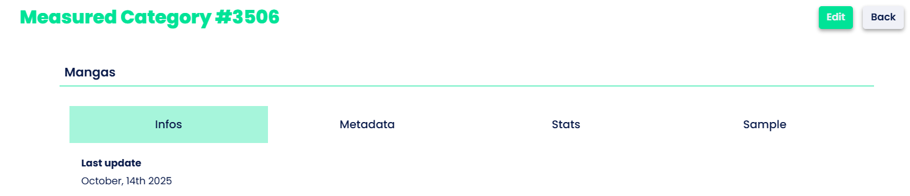
The detail view for a measured category has 4 tabs: Infos, Metadata, Stats, and Sample. The Infos tab shows the category name and last update date (October 14th, 2025). The top-right provides an "Edit" button (green) and a "Back" button to return to the list.
Detail View — Measured Category #3440 "Numerology and Astrology"
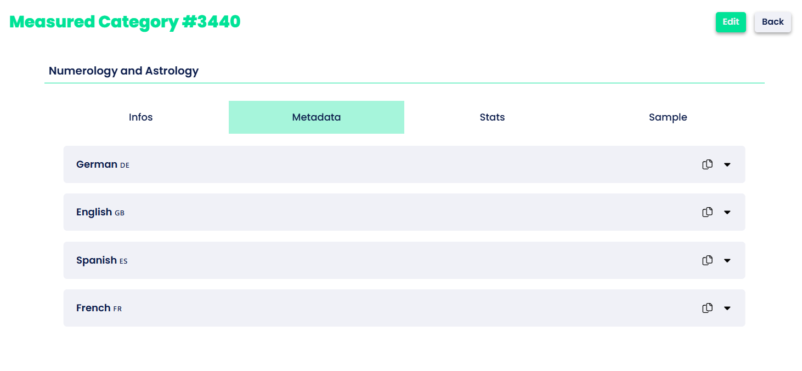
The Metadata tab shows language-specific entries. Each supported language (German DE, English GB, Spanish ES, French FR) appears as a collapsible row. Click the dropdown arrow to expand a language and view its content. The copy icon allows copying the metadata for that language.
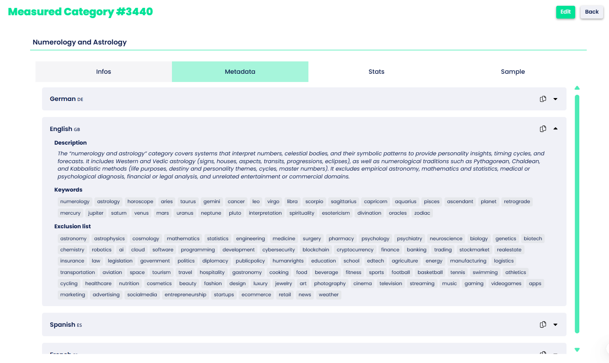
When expanded, each language entry reveals three sections:
- Description — A detailed text explaining what the category covers and what it excludes (used by the semantic model for scoring)
- Keywords — A list of relevant terms that help the model identify matching content (displayed as grey badges, e.g. "numerology", "astrology", "horoscope", "aries", "taurus"...)
- Exclusion list — Terms that should NOT trigger this category, preventing false positives (e.g. "astronomy", "mathematics", "statistics" are excluded from "Numerology and Astrology")
5. SEMOs (Semantic Models)
A SEMO is the most fundamental segment type. It targets web pages whose content matches a specific semantic category above a defined threshold.
What Is a SEMO?
When Qwarry's technology analyzes a web page, it assigns scores to hundreds of categories (called Measured Categories). A SEMO defines a rule: "target pages where category X scores above threshold Y".
(400+ categories) → SEMO Rule
(category + threshold) → Page qualifies
for targeting
SEMO Parameters
| Parameter | Description | Example |
|---|---|---|
| Name | Descriptive name of the segment | "Automotive - High Intent" |
| Measured Category | The semantic category to evaluate | Automotive |
| Threshold | Minimum score required (0-100) | 70 |
| Operator | Comparison operator | greater_than, equals, less_than |
| Code | Unique identifier for partner activation | Auto-generated |
SEMO Request Status
SEMOs follow a workflow before activation:
| Status | Meaning |
|---|---|
| requested | SEMO has been requested by sales/adops |
| preparing | Tech team is configuring and validating the SEMO |
| released | SEMO is active and available for targeting |
| rejected | SEMO was rejected (insufficient reach, overlap, etc.) |
SEMOs in the Interface
List View
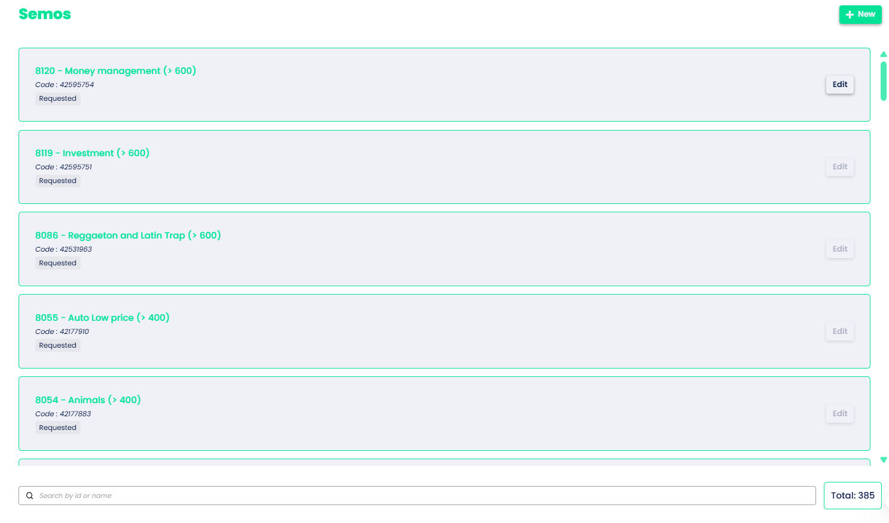
The SEMOs list displays all 385 segments sorted by ID (most recent first). Each card shows:
- The ID and name with threshold in green (e.g. "8120 – Money management (> 600)")
- The Code — the Xandr segment code (e.g. "Code : 42595754")
- A status badge — "Requested" (grey) or "Released" (green)
- An "Edit" button on the right
A search bar at the bottom filters by ID or name. The "+ New" button (top-right) creates a new SEMO.
Detail View — SEMO #8120 "Money management (> 600)" (Requested)
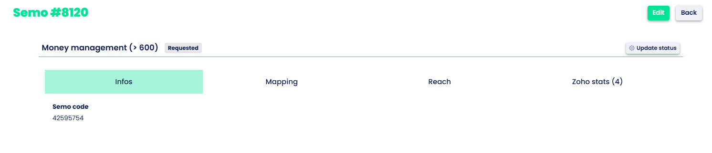
The detail header shows the segment name, threshold, status badge, and an "Update status" button (gear icon) to change the workflow state. The view has 4 tabs: Infos, Mapping, Reach, and Zoho stats. The Infos tab displays the SEMO code (42595754). Top-right buttons: "Edit" (green) and "Back".
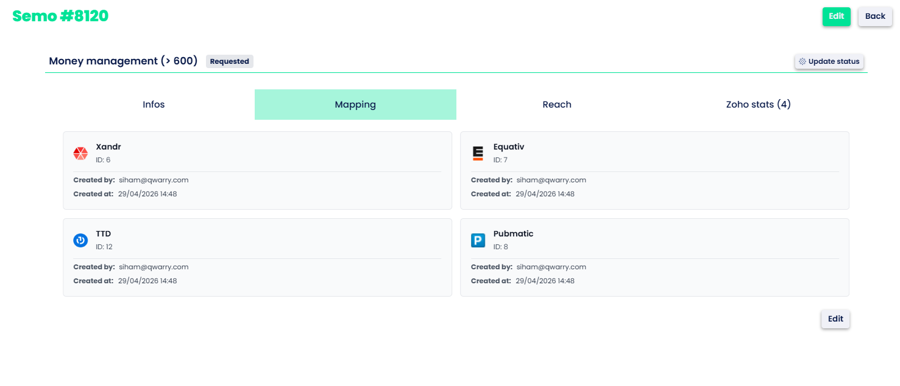
The Mapping tab for SEMO #8120 shows it is activated on 4 partners. Each partner card displays:
- Partner logo and name — Xandr (ID: 6), Equativ (ID: 7), TTD (ID: 12), Pubmatic (ID: 8)
- Created by — the user who created the mapping (siham@qwarry.com)
- Created at — timestamp (29/04/2026 14:48)
The "Edit" button at the bottom allows adding or removing partner mappings.
Detail View — SEMO #7563 "Weather Forecast (>= 400)" (Released)
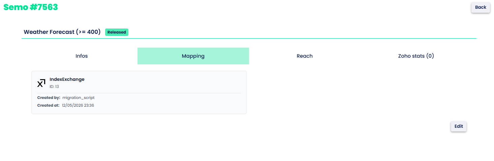
This SEMO has the "Released" status (green badge) and is mapped to only 1 partner: IndexExchange (ID: 13). Note "Created by: migration_script" and date "12/05/2026 23:36" — this mapping was created automatically during a bulk migration, not manually.
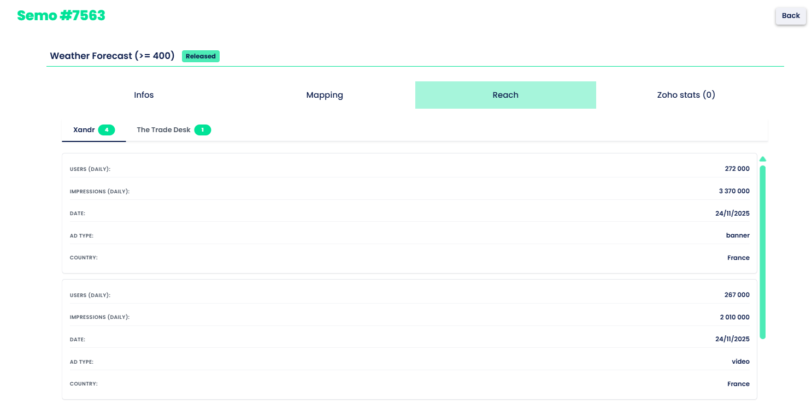
The Reach tab for SEMO #7563 shows performance data. Sub-tabs at the top switch between partners: Xandr (4 entries, green badge) and The Trade Desk (1 entry, green badge). Each reach entry shows:
- Users (daily) — 272,000 unique users
- Impressions (daily) — 3,370,000 available impressions
- Date — 24/11/2025
- Ad type — "banner" (first entry), "video" (second entry with 267,000 users / 2,010,000 impressions)
- Country — France
Detail View — SEMO #7613 "Boxing (>= 400)" (Released)
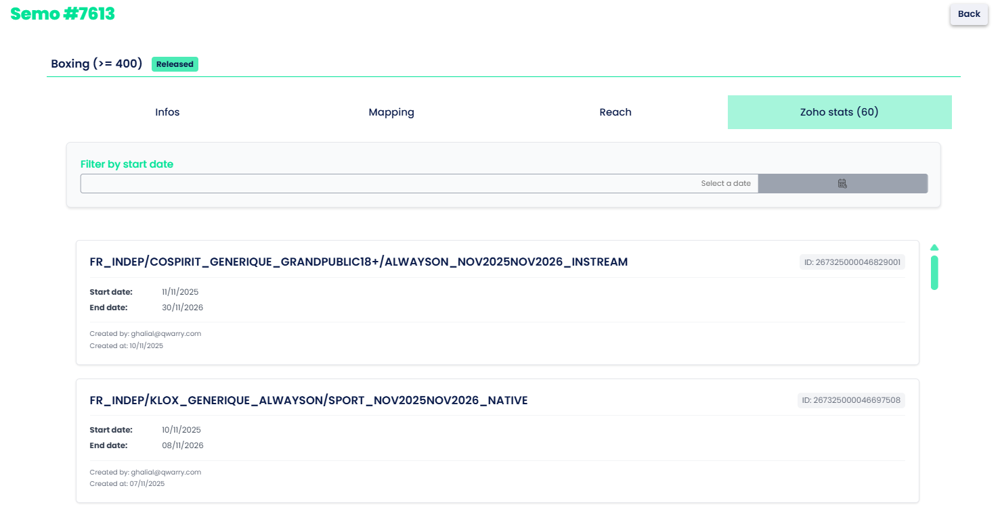
The Zoho stats tab for SEMO #7613 shows 60 linked deals (indicated in the tab label). A "Filter by start date" date picker narrows results. Each deal card shows:
- Deal name — the campaign identifier (e.g. "FR_INDEP/COSPIRIT_GENERIQUE_GRANDPUBLIC18+/ALWAYSON_NOV2025NOV2026_INSTREAM")
- ID — Zoho deal ID (e.g. 267325000046829001)
- Start date / End date — campaign period (e.g. 11/11/2025 – 30/11/2026)
- Created by — who linked the deal (ghalial@qwarry.com)
- Created at — when the link was made (10/11/2025)
6. Contextual Audiences
Contextual Audiences target users (IDs) rather than pages. They are built from users who have visited pages categorized by Qwarry's technology.
How Contextual Audiences Differ from SEMOs
| SEMO | Contextual Audience | |
|---|---|---|
| Targets | A web page | A user (ID) |
| Logic | "This page is about X" | "This user has visited pages about X" |
| Reach | Only on matching pages | Anywhere the user browses |
| Sitelist | Compatible | Not recommended (limits reach) |
Audience Parameters
| Parameter | Description | Example |
|---|---|---|
| Name | Audience name | "Eco-Conscious Shoppers FR" |
| Affiliated Segments | SEMOs that define the audience (1 to 100+) | ["Organic Food", "Sustainable Living"] |
| Frequency | Minimum visits to qualify | 3 (user must visit 3 matching pages) |
| Recency | Time window (max 90 days) | 30 days |
| Countries | Geographic scope | ["FR", "DE", "ES"] |
| Audience Type | contextual or inapp | contextual |
| Status | active, inactive, or archived | active |
Frequency & Recency Tuning
- Higher frequency = more engaged users, smaller but more qualified audience
- Lower frequency = broader reach, less qualified
- Shorter recency = fresher intent (user visited recently)
- Longer recency = larger pool but older interest
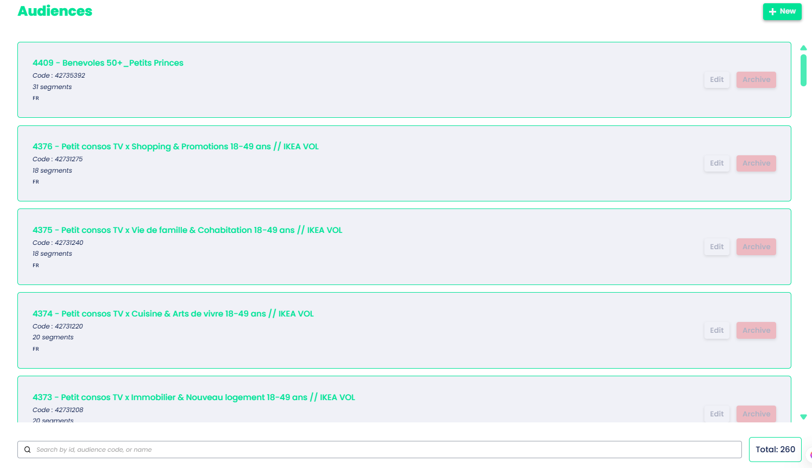
The Audiences list shows all 260 contextual audiences. Each card displays the ID, name, audience code, number of affiliated segments (e.g. "31 segments"), and country (e.g. "FR"). Two actions are available: "Edit" to modify the audience, and "Archive" (pink button) to deactivate it. The search bar supports filtering by ID, audience code, or name.
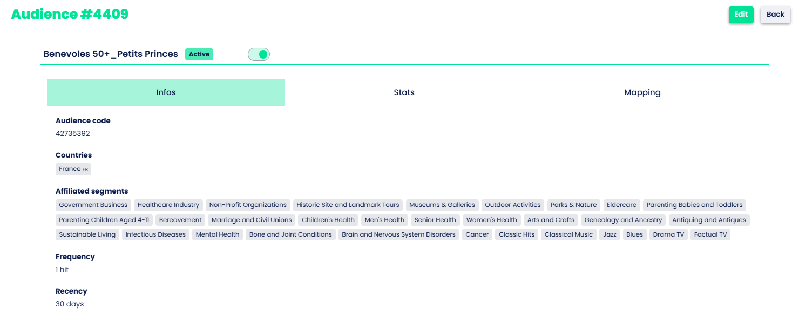
The audience detail view has 3 tabs: Infos, Stats, and Mapping. The header shows the audience name, an "Active" status badge (green), and a toggle switch to activate/deactivate the audience. The Infos tab displays:
- Audience code — the unique identifier used by partners
- Countries — geographic scope (shown as badges, e.g. "France FR")
- Affiliated segments — all the SEMOs that define this audience (displayed as grey badges). Users who visit pages matching any of these segments will be included in the audience
- Frequency — minimum number of visits required (e.g. "1 hit")
- Recency — time window for counting visits (e.g. "30 days")
7. Combination Segments
Combination Segments allow you to create complex targeting rules by combining multiple measured categories with AND/OR logic.
How Combinations Work
A Combination Segment uses a nested logical structure:
(all must match) contains OR groups
(at least one must match) contains Conditions
(category + threshold + operator)
Example
Target pages that are about Automotive AND (Luxury OR Premium):
| Level | Logic | Condition |
|---|---|---|
| AND | All OR groups must match | — |
| → OR Group 1 | At least one condition | Automotive > 70 |
| → OR Group 2 | At least one condition | Luxury > 60 OR Premium > 60 |
Combination Parameters
| Parameter | Description |
|---|---|
| Name | Descriptive name |
| Description | Explanation of the targeting logic |
| Code | Auto-generated unique code for partner activation |
| AND conditions | Nested OR groups, each containing category/threshold/operator conditions |
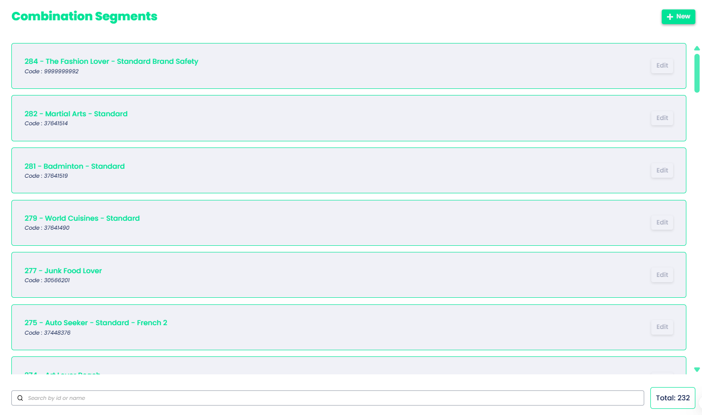
The list displays all 232 combination segments. Each card shows the ID, name (e.g. "284 – The Fashion Lover – Standard Brand Safety"), and the segment code. Click "Edit" to modify or "+ New" to create a new combination.
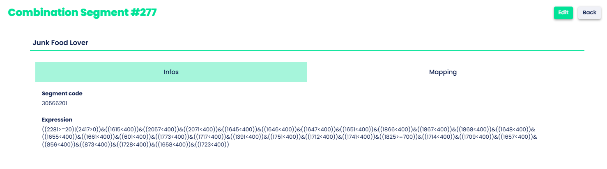
The detail view has 2 tabs: Infos and Mapping. The Infos tab shows the segment code and the Expression — the logical formula that defines the combination. The expression uses a compact syntax: ((2281>=20)|(2417>0))&((1615<400))&... where numbers are measured category IDs, operators define thresholds, & means AND, and | means OR. This allows very precise multi-condition targeting.
8. YouTube Segments
YouTube Segments use AI-powered vector search to find YouTube channels and videos that are semantically relevant to a given theme. This is Qwarry's cookieless YouTube targeting solution.
How YouTube Targeting Works
(description + keywords) → AI generates
embedding vector → Vector search
in OpenSearch → AI reranking
(Cohere) → Matched channels
& videos
The Tuning Process
YouTube Segments are created and refined through a tuning process:
- Define the segment — Provide a name, description, keywords, and exclusion keywords
- AI Enhancement — Optionally use AI to generate better descriptions, keywords, or exclusions
- Run tuning — The system searches for matching channels across 3 tiers (Large, Medium, Small)
- Review results — Inspect the matched channels and videos
- Adjust parameters — Fine-tune thresholds, number of results, and exclusions
- Save — Confirm the segment, which triggers daily automatic synchronization
Channel Tiers
Channels are categorized by subscriber count into three tiers:
| Tier | Subscribers | Use Case |
|---|---|---|
| Large | ≥ 500,000 | Maximum reach, premium channels |
| Medium | 50,000 – 500,000 | Balanced reach and relevance |
| Small | < 50,000 | Niche, highly relevant channels |
Tuning Parameters
| Parameter | Description | Default |
|---|---|---|
| Description | Semantic description of the theme | — |
| Keywords | Additional keywords to refine the search | — |
| Exclusion Keywords | Keywords to filter out irrelevant results | — |
| nb_result_large | Max channels in Large tier | Varies |
| nb_result_medium | Max channels in Medium tier | Varies |
| nb_result_small | Max channels in Small tier | Varies |
| scan_k | Number of nearest neighbors to scan | 10,000 |
| min_opensearch_score | Minimum similarity score (0.0–1.0) | 0.65 |
| min_reranking_score | Minimum AI reranking score (0.0–1.0) | 0.35 |
| Language | Target language for channel search | fr, en, it, de, ar, zh, th, es, vi, nl |
| Subscriber min/max | Filter channels by subscriber range | — |
| Enable reranking | Use AI reranking for better precision | true |
AI Enhancement
Segment Lab can use AI (AWS Bedrock Nova) to automatically improve your segment definition:
- Generate description — Create a rich semantic description from a segment name
- Suggest keywords — Propose relevant keywords to improve search recall
- Suggest exclusions — Identify keywords that could bring irrelevant results
Daily Synchronization
Once a YouTube Segment is saved, it is automatically refreshed daily:
- New channels matching the criteria are added
- Channels that no longer match are removed
- Videos from matched channels are indexed
Languages are processed in rotation (e.g. FR+EN on day 1, IT+DE on day 2, etc.) to distribute load.
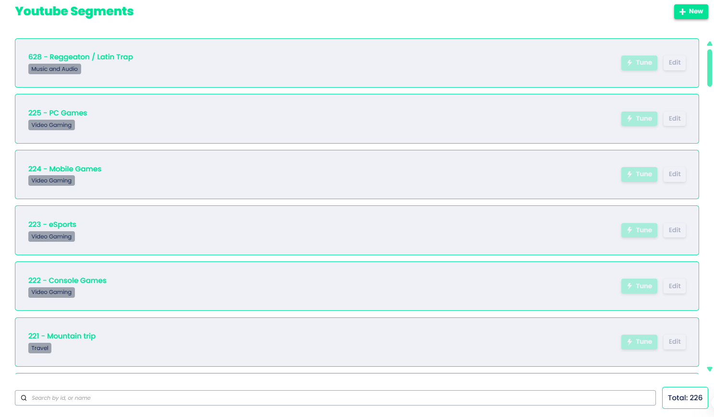
The list displays all 226 YouTube segments. Each card shows the ID, name (e.g. "628 – Reggeaton / Latin Trap"), and a category badge (grey, e.g. "Music and Audio", "Video Gaming", "Travel"). Two actions are available: "⚡ Tune" (green button) to launch the AI tuning process, and "Edit" to modify segment metadata.
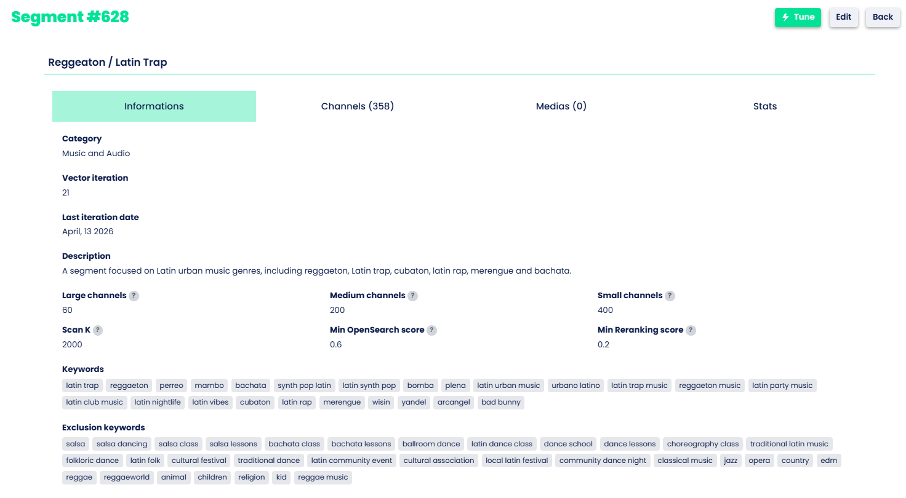
The segment detail view has 4 tabs: Informations, Channels, Medias, and Stats. The Informations tab displays:
- Category — the thematic category (e.g. "Music and Audio")
- Vector iteration — how many times the segment has been tuned/synced (e.g. 21)
- Last iteration date — when the last daily sync ran
- Description — the semantic description used for vector search
- Tier quotas — Large channels (60), Medium channels (200), Small channels (400)
- Search parameters — Scan K (2000), Min OpenSearch score (0.6), Min Reranking score (0.2)
- Keywords — terms that refine the search (displayed as grey badges)
- Exclusion keywords — terms to filter out irrelevant results
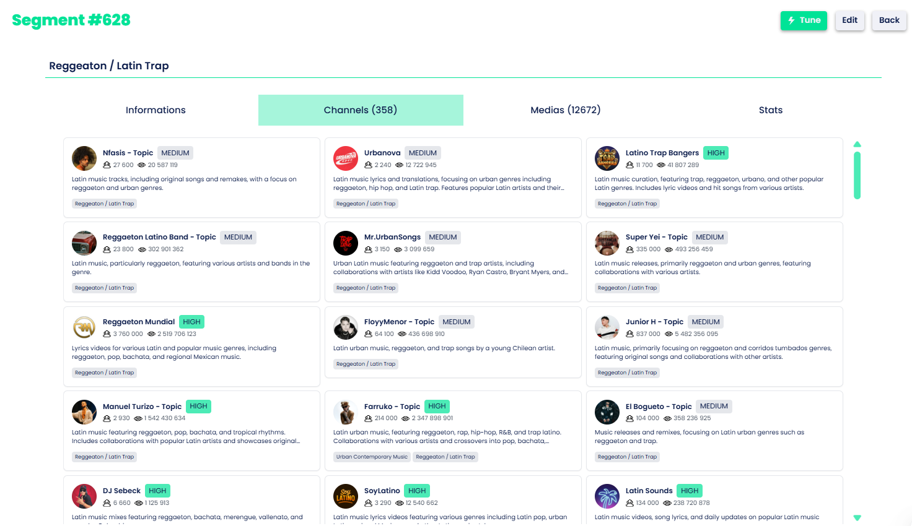
The Channels tab shows all matched YouTube channels in a grid layout. Each channel card displays:
- Channel thumbnail and name
- Tier badge — HIGH (green, ≥500K subs), MEDIUM (blue, 50K–500K), or LOW
- Subscriber count (👤 icon) and total views (👁 icon)
- Description — AI-generated summary of the channel's content
- Segment badge — confirming which segment matched this channel
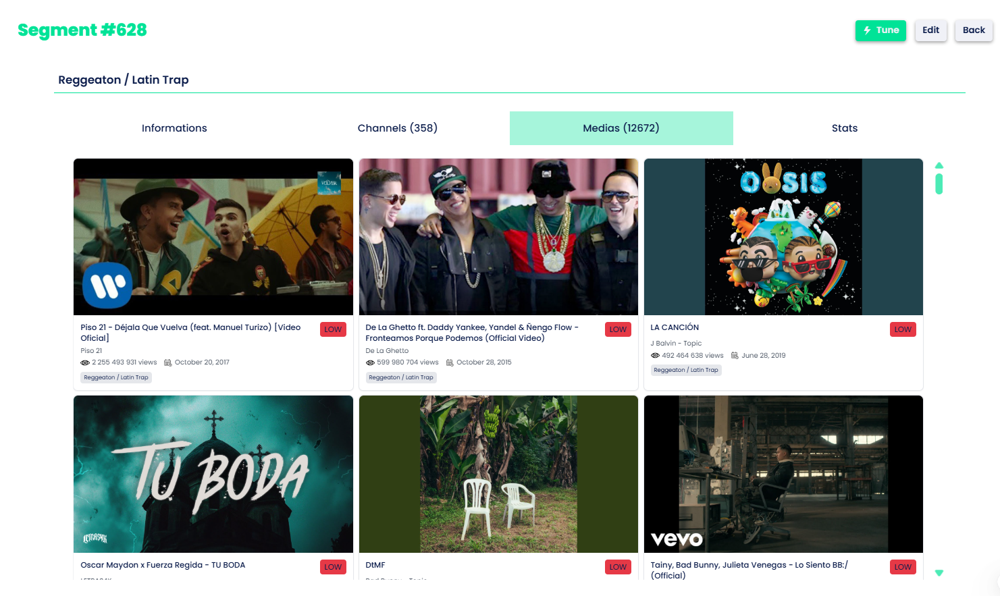
The Medias tab shows matched videos in a grid with thumbnails. Each video card displays the video title, channel name, view count, publication date, a relevance badge (HIGH/MEDIUM/LOW), and the segment name it was matched to. This allows reviewing whether the matched videos are truly relevant to the segment theme.
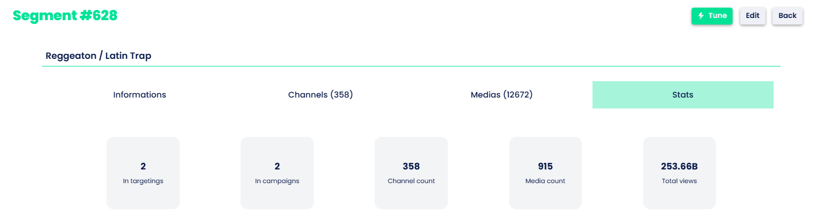
The Stats tab provides a high-level overview with 5 key metrics displayed as cards:
- In targetings — number of active targetings using this segment (e.g. 2)
- In campaigns — number of campaigns using this segment (e.g. 2)
- Channel count — total matched channels (e.g. 358)
- Media count — total matched videos (e.g. 915)
- Total views — cumulative views across all matched content (e.g. 253.66B)
The Tuning Interface
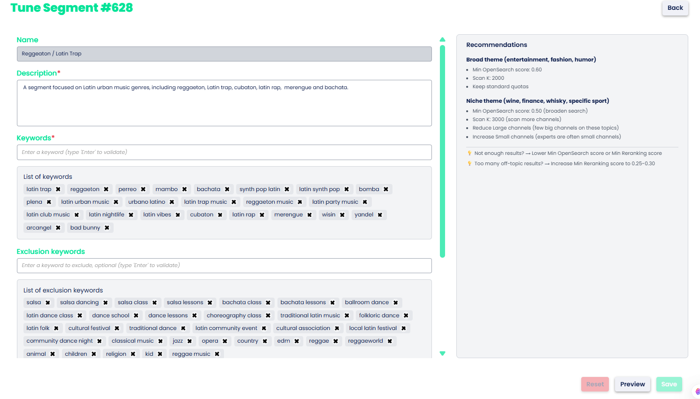
The tuning page is the core interface for configuring YouTube segment search. The left panel contains the form fields:
- Name — segment name (read-only during tuning)
- Description* — the semantic description that gets converted into an embedding vector
- Keywords* — additional terms to improve search recall (add with Enter key, remove with ✕)
- Exclusion keywords — terms to filter out (optional)
The right panel shows Recommendations with suggested parameter values for different use cases:
- Broad theme (entertainment, fashion, humor) — Min OpenSearch score: 0.60, Scan K: 2000, keep standard quotas
- Niche theme (wine, finance, specific sport) — Min OpenSearch score: 0.50, Scan K: 3000, reduce Large channels, increase Small channels
Tips at the bottom: "Not enough results? → Lower Min OpenSearch score or Min Reranking score" and "Too many off-topic results? → Increase Min Reranking score to 0.25–0.30".
Three action buttons: "Reset" (pink, clears changes), "Preview" (runs tuning without saving), and "Save" (green, runs tuning and saves results).
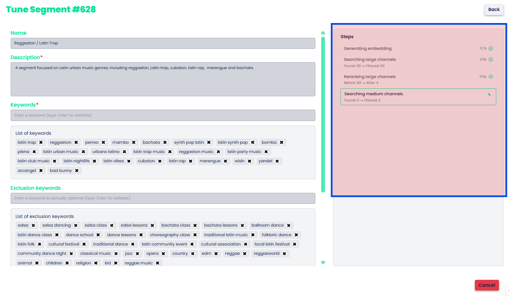
When tuning is launched (Preview or Save), the right panel switches to a Steps view showing real-time progress. Each step displays its name, duration, and a green checkmark when complete:
- Generating embedding (0.7s) — converts description + keywords into a vector
- Searching large channels (2.5s) — k-NN search in the Large tier (Found: 60 → Filtered: 60)
- Reranking large channels (0.5s) — AI reranking reduces results (Before: 60 → After: 4)
- Searching medium channels — currently in progress (animated spinner)
The form fields become greyed out (disabled) during tuning. A "Cancel" button (red) allows stopping the process.
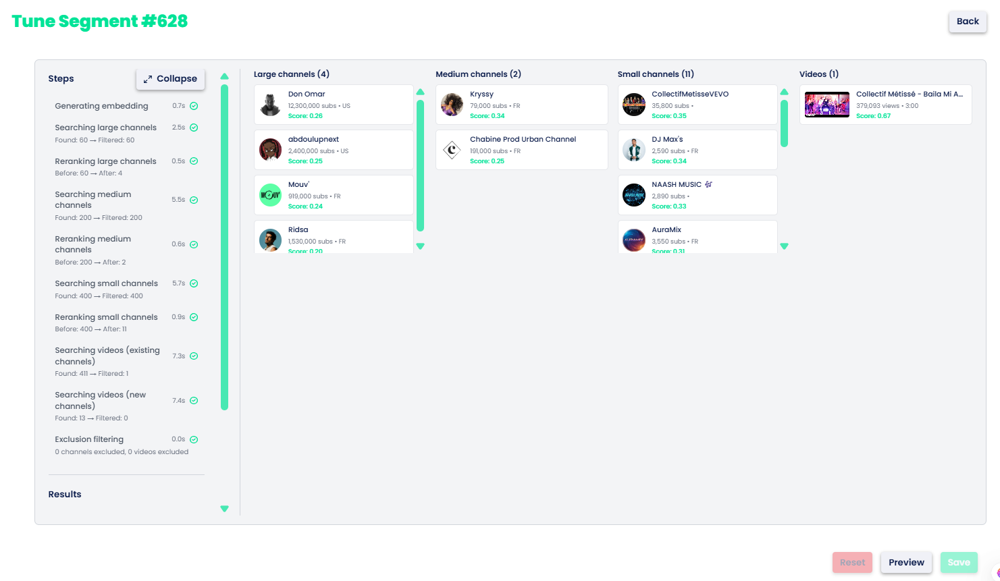
After tuning completes, the results are displayed in columns by tier:
- Large channels (4) — e.g. Don Omar (12.3M subs, US), abdoulupnext (2.4M subs, US)
- Medium channels (2) — e.g. Kryssy (79K subs, FR), Chabine Prod Urban Channel (191K subs, FR)
- Small channels (11) — e.g. CollectifMetisseVEVO (35.8K subs), DJ Max's (2.5K subs, FR)
- Videos (1) — individual videos matched by content
Each result shows the channel avatar, name, subscriber count, country, and a relevance score (in green, e.g. "Score: 0.26"). The left panel shows the complete steps log with a "Collapse" button. Buttons at the bottom: "Reset", "Preview", and "Save".
YouTube Feedback
Users can provide feedback on matched channels and videos to improve targeting quality:
| Feedback Reason | Meaning |
|---|---|
| OUT_OF_CONTEXT | Channel/video is not relevant to the segment theme |
| LANGUAGE_ERROR | Channel/video is in the wrong language |
| OUT_OF_TIERING | Channel is in the wrong subscriber tier |
| OTHER | Other issue (details provided) |
9. YouTube Feedback
The YouTube Feedback page provides a centralized view of all feedback submitted on matched channels and videos. It allows the team to review, filter, and process reported issues.
Feedback Interface
The feedback page is split into two tabs:
- Channels — Feedback on YouTube channels (321 results)
- Videos — Feedback on individual videos (90 results)
Filters
| Filter | Description |
|---|---|
| Status | All statuses, Pending, Processed |
| Reason | All reasons, Out of context, Language error, Out of tiering, Other |
| Start date / End date | Filter by creation date range |
| Targeting ID | Search by specific targeting ID |
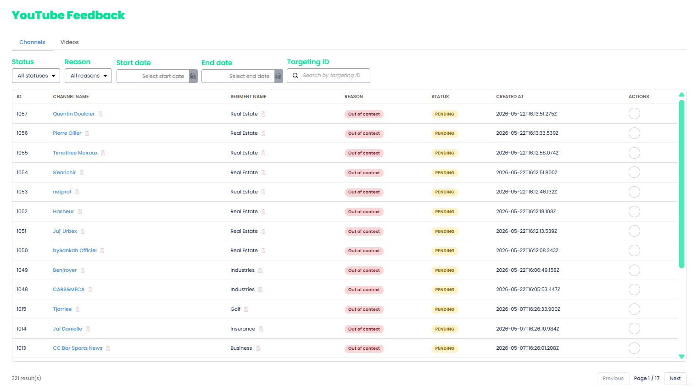
The Channels tab displays a paginated table (321 results, 17 pages) with columns: ID, Channel Name (clickable link to YouTube), Segment Name, Reason (colored badge — "Out of context" in orange, "Language error" in blue, etc.), Status ("PENDING" in yellow, "PROCESSED" in green), Created At (timestamp), and Actions (toggle to mark as processed). Filters at the top allow narrowing by status, reason, date range, or targeting ID.
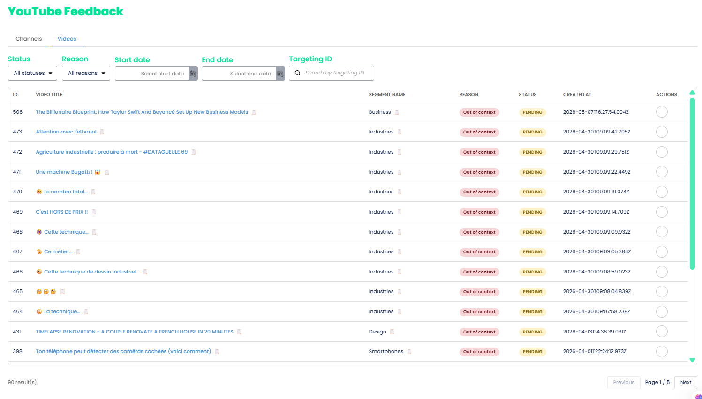
The Videos tab has the same structure but for individual videos (90 results, 5 pages). Columns include ID, Video Title (clickable link), Segment Name, Reason, Status, Created At, and Actions. This helps identify specific videos that were incorrectly matched to a segment theme.
10. YouTube Spotlights
YouTube Spotlights are a simplified version of YouTube Segments, designed for creating curated channel lists without the tiered structure.
Spotlights vs YouTube Segments
| YouTube Segment | YouTube Spotlight | |
|---|---|---|
| Tiers | 3 tiers (Large, Medium, Small) | Single flat list |
| Complexity | Full parameter control | Simplified (description + keywords) |
| Use case | Broad thematic targeting | Curated channel lists for specific campaigns |
| Daily sync | Yes | Yes |
Spotlight Parameters
| Parameter | Description |
|---|---|
| Name | Spotlight name |
| Description | Semantic description for vector search |
| Keywords | Keywords to refine the search |
| Exclusion Keywords | Keywords to exclude |
| nb_results | Total number of channels to find |
| Language | Target language |
| Subscriber min/max | Subscriber range filter |
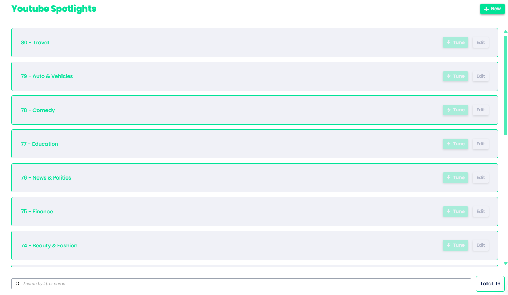
The Spotlights list shows all 16 spotlights. Each card displays the ID and name (e.g. "80 – Travel", "79 – Auto & Vehicles", "78 – Comedy"). Like YouTube Segments, each has a "⚡ Tune" button and an "Edit" button. The simpler structure (no category badge, no tier info in the list) reflects the streamlined nature of spotlights.
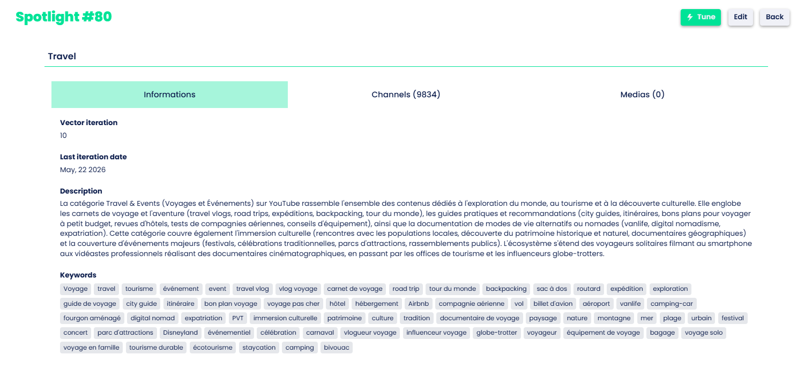
The spotlight detail view has 3 tabs: Informations, Channels, and Medias. The Informations tab shows:
- Vector iteration — sync count (e.g. 10)
- Last iteration date — when the last refresh ran (e.g. May 22, 2026)
- Description — a rich semantic description used for vector search (can be quite long and detailed)
- Keywords — extensive list of relevant terms displayed as grey badges
Note: Unlike YouTube Segments, spotlights do not show tier quotas or separate Large/Medium/Small counts — they use a single flat list of channels.
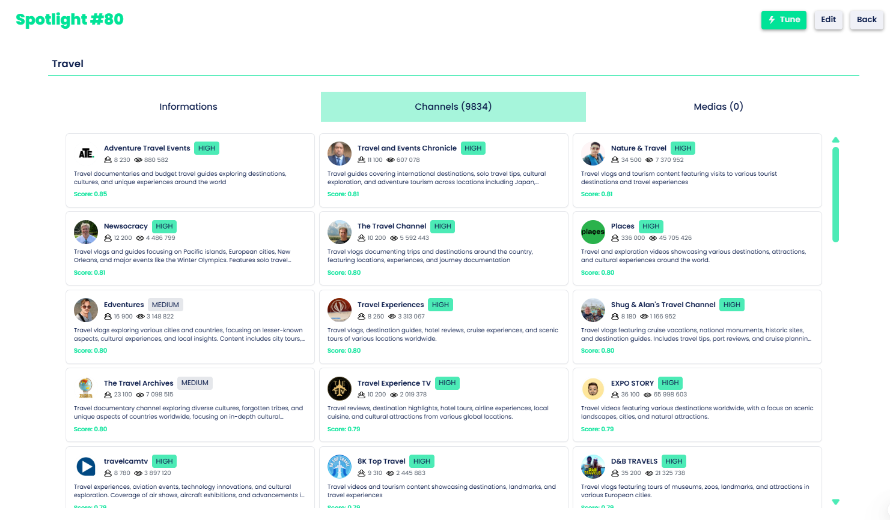
The Channels tab displays matched channels in the same grid format as YouTube Segments. Each card shows the channel avatar, name, tier badge (HIGH/MEDIUM), subscriber count, total views, a description, and a relevance score (e.g. "Score: 0.85"). Channels are sorted by score (highest first). In this example, Spotlight #80 (Travel) has 9,834 matched channels.
Spotlight Tuning
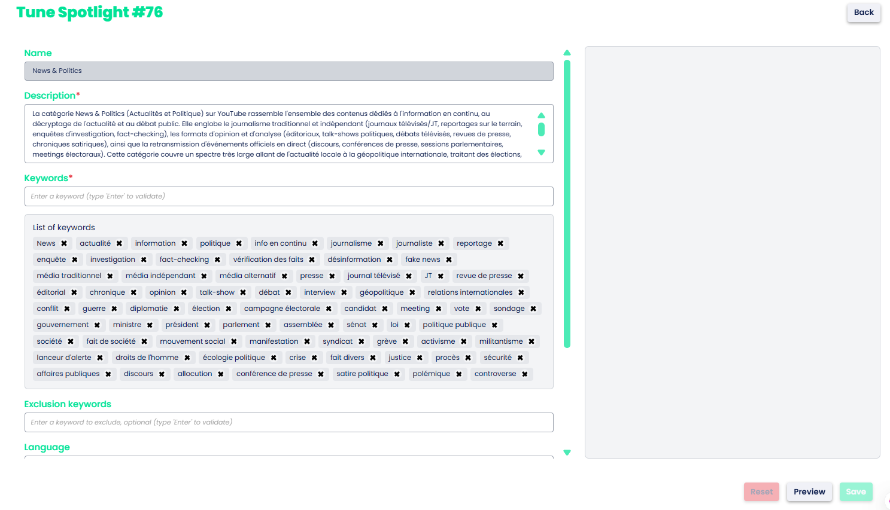
The spotlight tuning form is similar to YouTube Segment tuning but with fewer parameters. The top section contains:
- Name — spotlight name (e.g. "News & Politics")
- Description* — detailed semantic description for the embedding
- Keywords* — list of keywords (add with Enter, remove with ✕)
- Exclusion keywords — optional terms to exclude
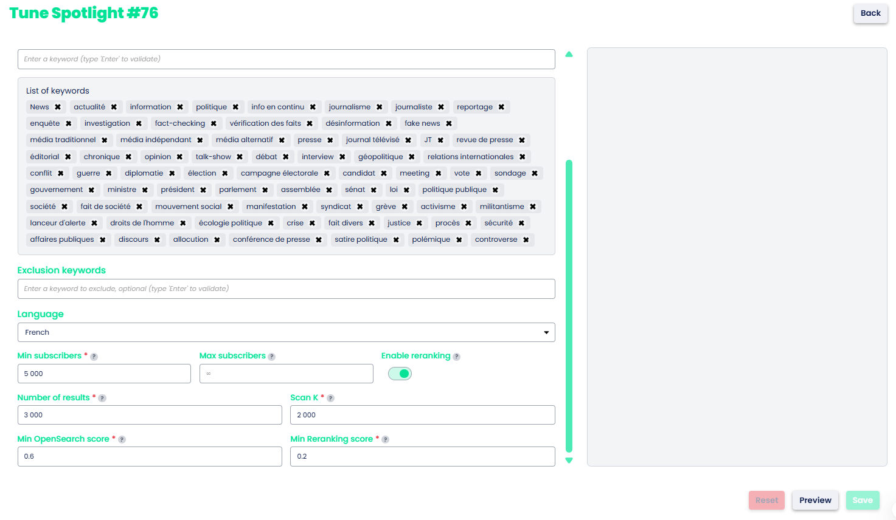
Below the keywords, the form shows the search parameters specific to spotlights:
- Language — dropdown to select target language (e.g. "French")
- Min subscribers* — minimum subscriber threshold (e.g. 5,000)
- Max subscribers — optional maximum (∞ if empty)
- Enable reranking — toggle switch (green = enabled)
- Number of results* — total channels to find (e.g. 3,000)
- Scan K* — number of nearest neighbors to evaluate (e.g. 2,000)
- Min OpenSearch score* — minimum similarity threshold (e.g. 0.6)
- Min Reranking score* — minimum AI reranking threshold (e.g. 0.2)
Action buttons: "Reset" (pink), "Preview" (grey), and "Save" (green).
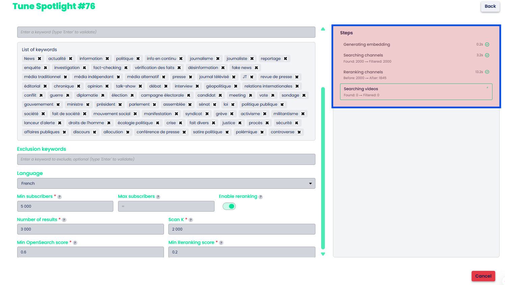
When tuning runs, the right panel shows the Steps progress (same as YouTube Segments but without tier separation):
- Generating embedding (0.2s) — vector creation
- Searching channels (3.2s) — single search across all channels (Found: 2000 → Filtered: 2000)
- Reranking channels (13.2s) — AI reranking (Before: 2000 → After: 1845)
- Searching videos — currently in progress
A "Cancel" button (red) allows stopping the process at any time.
11. In-URL Keywords Segments
In-URL Keywords segments target pages where specific keywords appear in the page URL. This is a simple but effective targeting method for pages with descriptive URLs.
How It Works
The system checks if any of the defined keywords are present in the URL string of a web page. If a match is found, the page qualifies for the segment.
Example
Segment: "Electric Vehicles" with keywords: ["electric-car", "ev-", "tesla", "electric-vehicle"]
Matching URLs:
https://news.com/2026/05/electric-car-sales-record✓https://auto.fr/reviews/tesla-model-3✓https://finance.com/stocks/apple-earnings✗
Parameters
| Parameter | Description |
|---|---|
| Name | Segment name |
| Description | What this segment targets |
| Keywords | Array of keywords to match in URLs |
| Code | Auto-generated unique code |
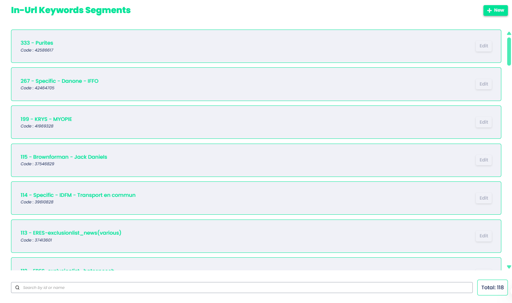
The list displays all 118 In-URL Keywords segments. Each card shows the ID, name (e.g. "333 – Purites", "267 – Specific – Danone – IFFO"), and the segment code. Click "Edit" to modify or "+ New" to create a new segment.
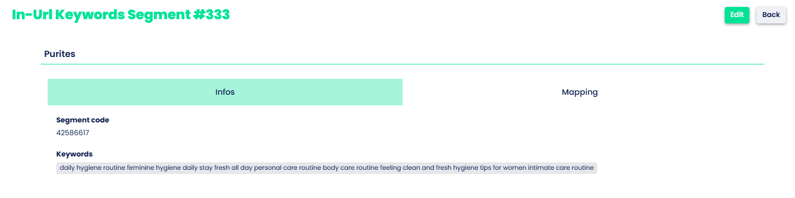
The detail view has 2 tabs: Infos and Mapping. The Infos tab shows the segment code and the Keywords — the list of terms that are matched against page URLs. Keywords are displayed as a continuous text string (e.g. "daily hygiene routine feminine hygiene daily stay fresh all day personal care routine..."). Any page whose URL contains one of these terms will qualify for the segment.
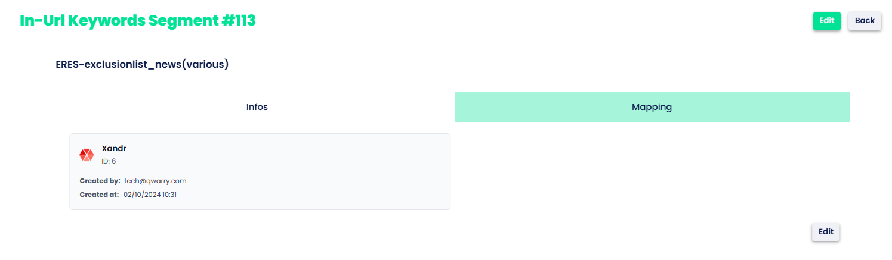
The Mapping tab shows which partners this segment is activated on. In this example, segment #113 is mapped to Xandr (ID: 6), created by tech@qwarry.com on 02/10/2024. The "Edit" button allows adding or removing partner mappings.
12. Socio-Demo Segments
Socio-Demographic segments target users based on age and gender data provided by panel measurement partners (e.g. Médiamétrie).
Parameters
| Parameter | Description | Example |
|---|---|---|
| Name | Segment name | "Women 25-34" |
| Description | Target demographic | "Female users aged 25-34" |
| Partner ID | Data partner providing the demographic data | Médiamétrie |
| Code | Unique identifier | Auto-generated |
13. Technical Segments
Technical segments target users based on their device, operating system, or browser characteristics.
Parameters
| Parameter | Description | Example |
|---|---|---|
| Name | Segment name | "Mobile iOS Users" |
| Description | Technical criteria | "Users on iOS mobile devices" |
| Code | Unique identifier | Auto-generated |
Common Technical Segments
- Desktop vs Mobile vs Tablet
- iOS vs Android
- Chrome vs Safari vs Firefox
- Connected TV (CTV)
14. Language Segments
Language segments target pages written in a specific language, as detected by Qwarry's semantic analysis.
Parameters
| Parameter | Description | Example |
|---|---|---|
| Name | Segment name | "French Content" |
| Measured Category | Language detection category | French language model |
| Code | Unique identifier | Auto-generated |
Supported Languages
Qwarry supports language detection across 26+ languages including: French, English, Spanish, German, Italian, Portuguese, Arabic, Chinese, Thai, Vietnamese, Dutch, and more.
15. Partner Mappings
Partner Mappings connect Segment Lab segments to external DSP/SSP platforms where they can be activated for campaign targeting.
How Mappings Work
Segment Lab → Map to partner(s) → Segment registered
on partner platform → Available for
campaign targeting
Supported Partners
| Partner | Type | Segment Types Supported |
|---|---|---|
| Xandr (AppNexus) | DSP/SSP | All segment types |
| Equativ | SSP | SEMOs, Combinations, In-URL Keywords, Socio-Demo, Technical, Language |
| The Trade Desk (TTD) | DSP | SEMOs, Combinations |
| Pubmatic | SSP | SEMOs, Combinations |
| Index Exchange | SSP | SEMOs, Combinations, In-URL Keywords, Socio-Demo, Technical, Language |
| DSP | Google taxonomy mapping |
Mapping a Segment
Each segment type has a Mappings section where you can:
- View current partner mappings
- Add a new mapping (select partner from the list)
- Remove a mapping (deactivates the segment on that partner)
16. Reach & Stats
Segment Lab provides reach data to help evaluate segment performance and sizing.
Available Metrics
| Metric | Description | Source |
|---|---|---|
| Impressions | Number of ad impressions matching the segment | Xandr |
| Users | Number of unique users in the segment | Xandr |
| First IDs Count | Number of first-party IDs in the audience | Internal |
| Xandr Count | Number of IDs synced to Xandr | Xandr |
Reach Data by Segment Type
- SEMOs — Reach data available per country and ad type (banner, video, native, audio)
- Contextual Audiences — Stats showing first IDs count and Xandr synced count
- YouTube Segments — Number of matched channels and videos per tier
Xandr Reach Data
Reach data from Xandr is synchronized daily and broken down by:
| Dimension | Values |
|---|---|
| Ad Type | Banner, Video, Native, Audio |
| Country | FR, DE, ES, GB, IT, US, etc. |
| Segment Code | The segment's unique code on Xandr |
17. Zoho Deals Integration
Segment Lab integrates with Zoho CRM to link segments to commercial deals, providing visibility on which segments are used in active campaigns.
How It Works
- Zoho deals are synchronized every hour automatically
- Each deal can reference multiple segment types: Contextual Audiences, SEMOs, Custom Tribes, Socio-Demo
- Sales teams can view which deals use a specific segment
- Campaign start/end dates from Zoho are linked to segment usage
Deal Information
| Field | Description |
|---|---|
| Deal Name | Name of the commercial deal in Zoho |
| Segments | List of segments associated with the deal |
| Campaign Start Date | When the campaign using these segments starts |
| Campaign End Date | When the campaign ends |
| Owner | Sales person responsible for the deal |
18. Glossary
| Term | Definition |
|---|---|
| SEMO | Semantic Model — a segment that targets pages based on a semantic category score threshold |
| Measured Category | A semantic category scored by Qwarry's technology (e.g. Automotive, Food & Drink) |
| Contextual Audience | A group of user IDs who visited pages matching specific semantic categories |
| Combination Segment | A segment using AND/OR logic to combine multiple measured category conditions |
| YouTube Segment | A set of YouTube channels and videos matched via AI vector search |
| YouTube Spotlight | A simplified curated list of YouTube channels for specific campaign targeting |
| Vector Search | AI-based semantic similarity search using embeddings (Amazon Titan) and OpenSearch k-NN |
| Reranking | AI post-processing (Cohere) that re-scores search results for better precision |
| Partner Mapping | The link between a Segment Lab segment and its registration on a partner platform (Xandr, IX) |
| Threshold | Minimum semantic score (0-100) required for a page to qualify for a SEMO |
| Frequency | Number of times a user must visit matching pages to qualify for an audience |
| Recency | Time window during which visits are counted (max 90 days) |
| Xandr | Microsoft's programmatic advertising platform (formerly AppNexus) |
| Index Exchange | SSP partner for segment activation |
| Equativ | SSP partner (formerly Smart AdServer) for segment activation |
| The Trade Desk (TTD) | DSP partner for programmatic advertising |
| Pubmatic | SSP partner for segment activation |
| Brand Safety | Ensuring ads are not served alongside harmful or inappropriate content |
| Tuning | The process of configuring and refining a YouTube segment's search parameters |
| Embedding | A numerical vector representation of text, used for semantic similarity comparison |
| k-NN | k-Nearest Neighbors — the algorithm used to find similar vectors in OpenSearch |
| Scan K | Number of candidate vectors to evaluate during k-NN search (higher = more thorough but slower) |
Last updated: May 2026